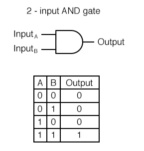

Een computer werkt door een input, een verwerking en een output.
Een input kan vele dingen zijn, maar meestal is het gewoon de click van een muis of van een keyboard. Hierna ontvangt de computer de input in de vorm van electrische signalen, om deze signalen te transformen in iets nuttigs moet het eerst wat magie(logica) doen. Deze logica wordt uitgevoert door gates. Gates zijn gemaakt door combinaties van transistors(kleine dingen die onthouden of ze een nul of een een hebben) resistoren en diodes. Deze worden gebombineerd om dingen te maken die de input veranderen. Neem bijvoorbeeld een AND-gate.
Hier kan je zien dat de output verandert op basis van de inputs, in dit geval wordt een AND-gate gebruikt als je wilt dat bijde inputs voldaan worden.
Output komt ook in veel vormen, bijvoorbeeld het beeldscherm waaar je nu naar staart, dat is een output. Door output krijg je bijvoorbeeld ook de resultaten van je rekenmachine te zien.
Voor opslag in een computer heb je twee vormen. Permanente opslag en tijdelijke opslag. Permanente opslag is bijvoorbeeld een hard disk, waarop de bits en bytes worden opgeslagen om later weer gelezen te worden. Tijdelijk opslag, ookwel RAM(random access memory) genoemd wordt gebruikt om snel data te kunnen opslagen en terugkrijgen, dit is handing, maar het neemt wel veel ruimte op, daarom wordt vooral permanente opslag gebruikt.
Hier kan je zien dat de outputs veranderen op basis van de input. Als je genoeg van deze gates neemt een combineerd krijg je een logic chip, die al het werk doet in de computer.